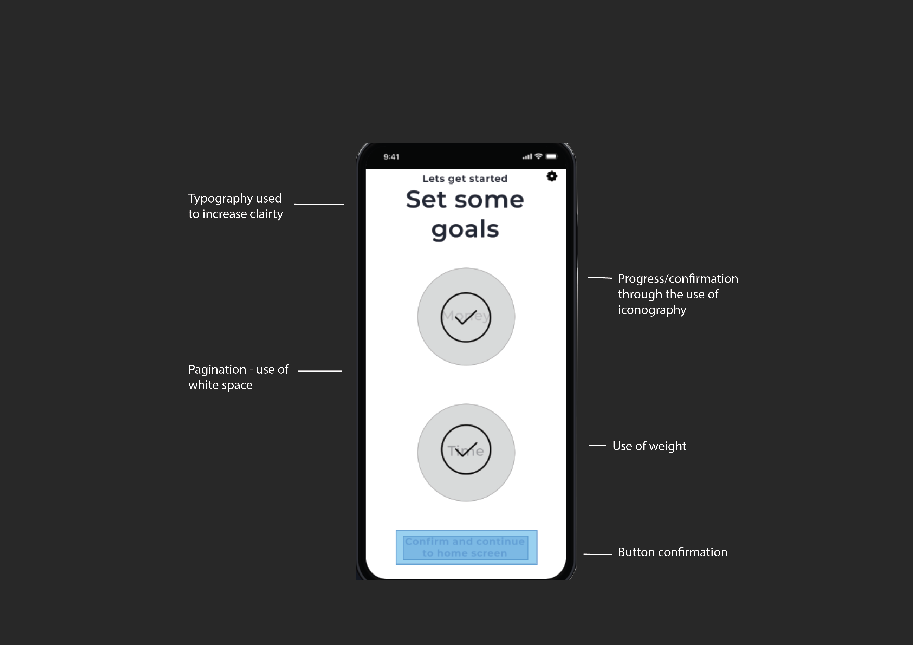
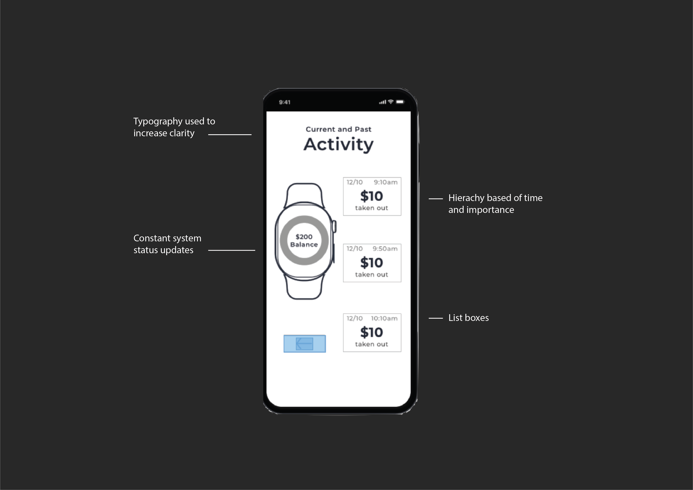
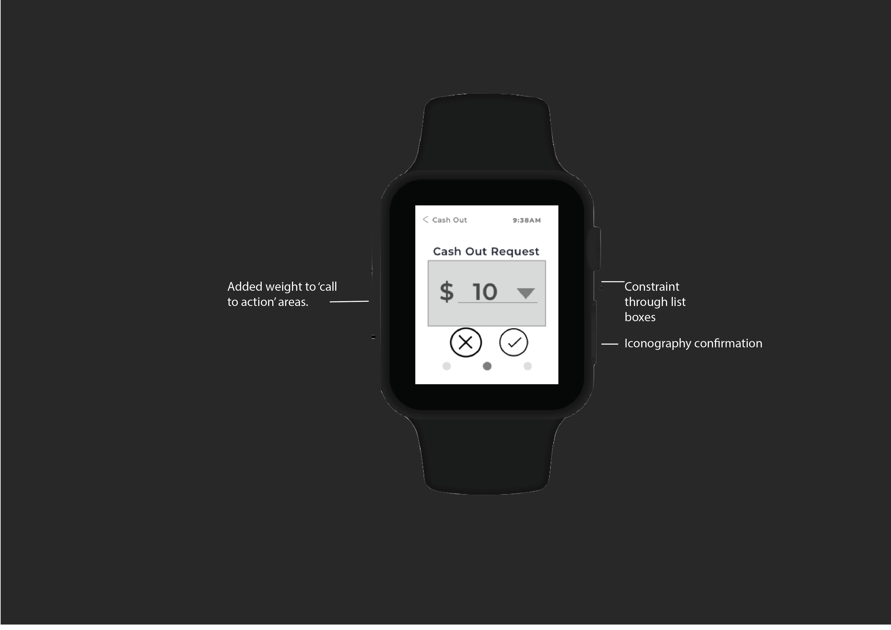
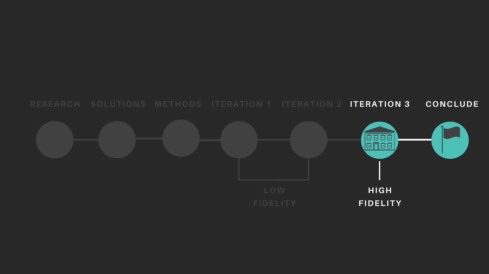

Welcome to Comm-It
The modern gambling regulation solution
Currently, ‘Australia is number one in the world for the highest capita of problem gamblers, (Young, 2017), with uncontrollable gambling addiction effecting ‘200,000 Australians' yearly’(Guardian 2017)

Each of our 3 reports heralded a wide variety of results. These results have heavily impacted our decision on the solutions that we could eventually design. We as a group investigated the factors which contribute to problem gambling, inquiring about the influence of the gambling machines themselves, the venue their held in and finally the mental characteristics.

In terms of structural characteristics, we found that the two most important factors for problem gamblers are 'fast reel spins' and bright flashing lights and sounds as rewarding for any amount of money 'won' as the machine's own form of positive reinforcement. For people to be able to gamble alone and without these factors, they need to be able to have these two aspects from the machine they play. A high jackpot being present on a machine also entices people to play as they think it increases their likeliness of actually winning because "It has to go off sooner or later.'' Otherwise, even non-problem gamblers can also see gambling machines as 'fun' so a potential solution can be derived from trying to find a new source of 'fun', as some participants stated that they gamble because it's just an easy and thrilling activity to do.
Following an extensive legal and policy review, we found that there was very little which could actually be altered in the physical problem location. There remain “non-negotiable areas” within these spaces such as government regulation, which regulate the current methods of displaying warnings and signage displays as well as other regulations such as (in the same act no less) of the darkness in the room. This means that the amalgam of governmental factors regulating the experience of gambling correlate with the enabling of gamblers to begin the road to addiction. There is also an inherent presence of alcohol in these gambling-enabled venues which contributes to addiction rates, as alcohol detriments the body’s ability to perform executive functions. The findings demonstrated a need for self-regulation. Self-regulation would be the basis for many of our concepts, as there are ‘negotiable areas’ within what a gambler can utilise to assist themselves with self-regulation.


Finally, we found that there are a wide array of psychological characteristics which govern whether a person is likely to be a problem gambler. Whether or not someone is likely to be able to get addicted to something, can be mapped on a spectrum. Problem gambling, similarly, also able to be mapped on a spectrum as there are 3 factors which characterise an individual’s own experience with pathological gambling. These are: their experiences, addictions and treatment. Other than this, there is no uniform definition for what ‘problem gambling’ entails, and currently only describes that an individual spends excess time and finance doing this activity. Solutions for these sorts of issues must be able to remove gambling as a support beacon for people with underlying, pre-existing psychological issues
With the criteria in mind we used forced association to diverge our ideation. We gathered the themes explored within our criteria and began rapidly ideating, allowing us to focus on core solution areas, and setting aside findings that created unviable solution spaces e.g. law. We began finding correlations between different elements within our ideation, specifically in regard to commitment and spending, the involvement of families, and trying to get the user physically away from the environment itself. We converged our ideation, into three core solution areas: commitment, communication and alternatives. We used crazy eights to collaboratively build upon these areas to iterate and benefit future solutions. Independently we selected concept areas that we had increased research knowledge on.
- Joel Fincher.
“I see my mates getting involved and I’m getting bored of just watching, I might just feel inclined to try my luck”
Alt-fun was based on the research finding that users were more likely to gamble if they were bored or stressed. Individuals wanted to be rewarded, addicted individuals need motivation to maintain on the path of recovery, and rewards incentivise doing an activity. When individuals get bored or stressed the EGM creates a negative feedback loop – when people are drawn back by the prospect of winning. All of which led to a solution space in which Alt-fun was able to tackle.
Alt-fun was based on the research finding that users were more likely to gamble if they were bored or stressed. Individuals wanted to be rewarded, addicted individuals need motivation to maintain on the path of recovery, and rewards incentivise doing an activity. When individuals get bored or stressed the EGM creates a negative feedback loop – when people are drawn back by the prospect of winning. All of which led to a solution space in which Alt-fun was able to tackle.
Alt-fun was based on the research finding that users were more likely to gamble if they were bored or stressed. Individuals wanted to be rewarded, addicted individuals need motivation to maintain on the path of recovery, and rewards incentivise doing an activity. When individuals get bored or stressed the EGM creates a negative feedback loop – when people are drawn back by the prospect of winning. All of which led to a solution space in which Alt-fun was able to tackle.
- Christopher Hunt
"Usually issues of conflict with partners in business and/or husbands/wives [bring patients into the clinic] .
The involve system was based off research into communication – specifically addiction being a force that comes as a result of one’s own personality and internal/external factors. For example, imagine yourself as a gambler who gambles
to hide personal thoughts - It’s only natural for people to rely on their friends and family to help them with something so personal
Gambling and addiction are intrinsically private. Problem Gamblers unknowingly distort the truth when they communicate their addiction - there is shame surrounding it. Everyone has a secret, though, you are only hurting yourself by
lying. Problem gamblers need to communicate more freely and openly in order to seek help. If we can communicate without judgement, then treatment services can be quickly and easily accessed. This communication can lead to treatment. A
combination of reduced shame, easy accessibility and honesty leads to increased likelihood of a problematic individual seeking treatment.
The involve system starts better, honest and easier communication between gambler and family. The machine recognises this and changes the UI for the gambler; and displays percentages of losses alongside testimonials given by the
family.
Primary for the involve system is users that want to start a conversation between gamblers and their loved ones to get them into treatment.
The process begins before the pub. They get a notification from the involve portal – and the UI on the EGM changes. The UI shows testimonials on the screen and the amount lost. Feedback is sent to family in relation to where they are,
how long the user has been there. This is based on the research that gamblers often gamble to hide their inner demons and repress feelings. When the problematic individual leaves the pub, the family get notified when they left, and are
able to see the exact time and money spent. This keeps the conversation open, when they get home there is statistical evidence of their problem.
The reason that the involve system wasn’t selected as a chosen space, was due to the lack of viability in the sense of governmental regulation industry regulation and the infringement of civil liberties, in other words: it breaches on our unnegotiable areas. If the device were to alter its UI, all pubs would need to implement this, or specific pubs would be disadvantaged. Likewise, the lack of complete understanding into when this problem can be identified causes conflict; the user may not believe they have a problem, but the family might, if the family restricts the user due to this. This can be seen as an act against the civil liberties of the user and cause an area for manipulation. However, the concept of increased family communication was carried through into the final solution space. Increased visibility of problematic behaviour to the family, likewise, a direct chain of communication was updated into the final solution.

The com-it was selected as the core solution, as it allowed for an easy combination of all three ideas. The idea combats law and human rights issues that other solutions had. It tackled all of our criteria effectively, creating a viable concept that could be developed and tested.
- Jackie
“There was a lot less problems back in the day, when EGM’s cashed out in check. They would have to leave the venue, go to the bank, cash the check, wait, then and only then would they have won”
The primary use case for the ‘com-it’ is for problematic individuals who want assistance regulating excessive spending. “Australian lose more money from gambling than any developed nation in the world.” (Sebag-Montefiore, 2017)
Research has shown gamblers “continue to persist, even after suffering extreme financial loss” (Jazaeri, 2012). To counteract this problem gambler Riana sets pre commitment levels, but as soon as she gets on the machine she breaks,
because she becomes emerged – a concept called restoration. Likewise, venues incentivise excessive spending by ensuring the users remain in their chair, comfortable. Thus, three problems are correlating. how can we implement
restoration in a committal card and reduce comfort?
The com-it ideated on the problem but settled on the idea that took inspiration from the previous research report, specifically the interview with Jackie.
Two devices are at play: the problematic gambler uses the ‘com-it wearable’. The solution specifically relies on a wearable, as the concept is ‘a watch for income’, having a device so easily accessible increases visibility. The
families: use the phone application. After they both activate their accounts, the problematic individual has to ask the family to transfer money onto his com-it, increasing the challenge of gambling and allowing for an open and
collaborative discussion.
Once the money is transferred, it visually displays as a bar educating the user on income lost, rather than income gained. “Bar graphs are the easiest form of graph to understand, and most effective at mapping
changes over time.” (Lile, n.d.) The problematic individual has to get cash out at the bar – this force the user too constantly leave the room increasing restoration and decreasing comfort. The bar drops, every time the user
spends money. Once the limit has dropped below halfway the wearable will vibrate every 15 mins, this increases feedback, externalising to reduce memory load. At the same time a notification is sent to the family
“increasing cognition as information is salient” (Sharp et al, 2019). Once the user has run out of money – they have to walk home to get more. forcing the user to leave the venue. If the problematic individual asks for a
top-up nothing will happen, because the com-it locks all transfers for 24hrs. This forces them to find something else to do while they wait and minimises the risk of manipulation to gain more money.


Finally, we found that there are a wide array of psychological characteristics which govern whether a person is likely to be a problem gambler. Whether or not someone is likely to be able to get addicted to something, can be mapped on a spectrum. Problem gambling, similarly, also able to be mapped on a spectrum as there are 3 factors which characterise an individual’s own experience with pathological gambling. These are: their experiences, addictions and treatment. Other than this, there is no uniform definition for what ‘problem gambling’ entails, and currently only describes that an individual spends excess time and finance doing this activity. Solutions for these sorts of issues must be able to remove gambling as a support beacon for people with underlying, pre-existing psychological issues
The com-it doesn’t break any current industry or governmental regulation. The product itself can be implemented independently, without harming the stakeholders.
In theory the com-it meet our criteria as it allows the user to identify that they excessively spend. It allows the user to be educated and re-evaluate their problematic behaviour. It informs the user about their lack of control but forfeiting control and allowing collaboration. Finally, it subsequently deters gambling due to increased challenge to partake in the activity itself, the benefit of which is reduced financial stress.
A precondition is that: users have to want help - or they will manipulate others to achieve their goals. Multiple use cases were explored, determining multiple alternative flows where manipulation could be invoked from the problematic individual.From the use case exploration it was clear the manipulation of the system was going to be a great concern for the outcome of the ‘Com-it’. Likewise, uptake of the Com-it, is likely to be relatively low due to the lack of user control and freedom.


We implemented 3 types of methods: “explorative, assessment, and comparative” (Studio, 2017) to gain “high effectiveness of usability testing” (Studio, 2017)
Our strategy is to develop this product in the most time efficient way. Implementing “current state, the path to get there and future state” (Google for Startups, 2016).
Our testing implemented methods to gain qualiative and quanititave primary data, while the explorative stage allowed us to explore the feedback based off secondary solutions. This allows us to iterate based of research, rather then
opinion. Exploration of our product iteration will categorising them into the innovation diagram: desirability ( “a desirable solution, one that your users need” (Orton, 2017)), feasibility (“building on your current operational
capabilities” (Orton, 2017)) and viability (“a sustainable business model” (Orton, 2017)) If we meet all three areas, we have sustained the “ideal innovation process” (Orton, 2017).
Gathering and Implementing feedback, specifically “bugs, satisfaction and efficiency” (Tubik Studio, 2017)
Aim: The aim of mixed usability testing was to test our conceptual model against our user’s mental model, to understand if our design principle implementation was successful and where the core errors were. We implemented role-play to understand the usability in conjunction with conceptual application and think aloud to find out why the users are having issues.
Usability test: We begin by explaining what the concept is, though at no point do we explain to the user how to complete the task, as by doing so we would minimise the success of the testing. We ensured our
abstract tasks broadened incrementally from low level tasks to high-level tasks. We ensured all aspects of the application and wearable were tested. A template was filled out based on completion, error, success, user satisfaction,
general comments and solutions to their errors/unsatisfaction (template can be found in the appendix).
Think-aloud: The method allowed us to not only figure out where the errors were, by why. Throughout the iterations, think aloud’s provided key data in our problem of ‘clarity’, and allowed us to determine
whether or not it was navigation clarity or the lack of conceptual information. However due to this method, the use of ‘reaction time’ in iteration two became unreliable.
Roleplaying was a method used to test the concept. As only the gambler could use the wearable, we couldn’t have one user test both devices. Therefore, one facilitator acted out what the corresponding persona
would be doing. Our aim was to be provided with greater quality of data, specifically in relation to themes, as we could receive emotional reactions rather than formal evaluative responses. This is evident in the first iteration, as
roleplaying revealed the conceptual flaw of our design – enabling aggression.
Six users were tested all three iterations. As research has shown that “The best results come from testing no more than 5 users” (Nielsen, 2000). All participants are either gamblers, or family members, ensuring the testing is viable to our target audience.
Clarissa – casual gambler – tested across two iterations.
Nicola – family member/ former department of industry employee – tested across two iterations
Clarissa – Casual gambler/ gambling attendant
Tim – gambler
Joel – gambler – Tested across two iterations.
Jack - casual gambler
Lily – Family – Tested across two iterations
Monika – Casual gambler
Adam – Casual gambler
Emily – Casual gambler.
David – Casual gambler
Adrian – Casual gambler.
Gagan – Family member
Megan – Family member.

Aim: The aim of the post testing survey was to explore the concept of the application and whether or not they believed the product met our criteria.
The survey was conducted by all users who conduct the usability test. Users will be asked questioned base on our criteria and elaborate on their answers, providing the team with qualitative and quantitative data based on the viability of our product. This method will likewise implement our adapted co creation approach and ask, “how would you solve it”.

Co-creation was adapted to suit our strategy. Rather than applying the original method, of sitting the user down and letting them design, we believed it would be more efficient to implement a co-creation element though out all aspects of the testing including ‘how would you solve it’ questions in the tasks that had errors (usability testing) and the criteria that had errors (survey). Users who provided larger solutions (e.g Nicola with the self-regulation feature), where tested twice, upholding the ‘comparative’ nature of this method. By only implementing this method with a small group, we ensured that the data was reliable, as new users wouldn’t have a large investment in the product as co-creation participants would. This allowed the user to be involved not only in the interface, but in the conceptual development. Upholding a human centred approach, whilst also being time and resource efficient.
Nicola
Joel
Lily
Heuristic evaluations were conducted throughout the design process. Heuristic participants increased alongside the increased development of the application, as usability testing gradually got better, the team decided it would be more reliable, in the later stages to gain more experienced feedback. At no stage to we gain direct peer heuristics as we likewise wanted to ensure reliability through minimising the risk of bias. Iteration three’s participants all have experience within the field, and weren’t direct peers, therefore risk was minimal. Heuristics were beneficial within our iteration, as this is the only method where our participants weren’t gamblers, therefore were able to analysis our product from an interface perspective rather than a conceptual perspective.
Iteration One: Design team heuristic
Iteration Two: Tutor heuristic
Iteration Three: Lachlan Cato, Lewis Moroney, Sean Mabin, Tanmay Kulkarni, Tahlia McKee

From the presentation of our solution’s future directions, we discussed and varied the concept accordingly to match our peers and tutor feedback.
From the presentation of our solution’s future directions of the original concept were discussed:
How can we reduce alcohol related violence?
Solution:
The Com-it was further developed to implement Alt-funs concept of relaxation – breaking the negative feedback loop through relaxation techniques of mindfulness. This was updated through a new breathing feature. It uses vibration to
assist with breathing techniques. The function ‘pops-up’ if the wearable determines heart rate is too high (built in Apple Watch function), and the vibration increases suggesting breathing in, decreasing to suggest breathing out.
How can we make it more accessible for individuals who have been drinking?
Solution:
The com-it removed many of the wearable functions, reducing it to bare minimum so users can use it while under the influence of alcohol. This applies the, 80/20 rule and flexibility usability trade off.
How can you reduce the commitment level over time?
Solution:
There is a new overall limit, where users can reduce cash out limit and payment limit over time. This was an implementation suggested by our tutor.
How can you ensure users won’t break?
Solution:
Through providing external regulation. The Com-it implemented multiple factors of the involve system, including increased communication with the loved one through a new messaging function, the viewing of past activity, time and date of
gambling. All of which allow the family to be more involved, and provide them with more monitoring abilities that will assist the users to “not break”.


Consistency – the com-it remains functionally consistent with common banking apps, likewise being internally consistent. Both allowing users to transfer knowledge and learn the application quicker.
Alignment – the application will use alignment to increase cohesion
Accessibility – the com-it remains functionally consistent with common banking apps, likewise being internally consistent. Both allowing users to transfer knowledge and learn the application quicker.
Conditioning – the com-it remains functionally consistent with common banking apps, likewise being internally consistent. Both allowing users to transfer knowledge and learn the application quicker.
Forgiveness – the com-it remains functionally consistent with common banking apps, likewise being internally consistent. Both allowing users to transfer knowledge and learn the application quicker.
Mental model – the com-it remains functionally consistent with common banking apps, likewise being internally consistent. Both allowing users to transfer knowledge and learn the application quicker.
Hierarchy – the com-it remains functionally consistent with common banking apps, likewise being internally consistent. Both allowing users to transfer knowledge and learn the application quicker.
Aesthetic usability effect – the com-it remains functionally consistent with common banking apps, likewise being internally consistent. Both allowing users to transfer knowledge and learn the application quicker.
Cognitive dissonance – the com-it remains functionally consistent with common banking apps, likewise being internally consistent. Both allowing users to transfer knowledge and learn the application quicker.
80/20 – the com-it remains functionally consistent with common banking apps, likewise being internally consistent. Both allowing users to transfer knowledge and learn the application quicker.
Design by committee – the com-it remains functionally consistent with common banking apps, likewise being internally consistent. Both allowing users to transfer knowledge and learn the application quicker.
Flexibility/usability trade-off – the com-it remains functionally consistent with common banking apps, likewise being internally consistent. Both allowing users to transfer knowledge and learn the application quicker.
Performance vs preferences – the com-it remains functionally consistent with common banking apps, likewise being internally consistent. Both allowing users to transfer knowledge and learn the application quicker.
Inspiration was taken from CommBank to ensure functional consistency with transactional input and output. The aim of which was to make it more intuitive to the user. (Logo, 2018). This further (in theory) adhered to the gulf of equation as we created “visual similarities” (Whitenton, 2018) between all of the com-it devices, and products that have similar system status designs such as Tesla. We likewise created “functional similarities” between all of the com-it devices, (Whitenton, 2018), and products that have similar systems such as CommBank.


The application has 4 core functions ‘messages’, ‘transfer’, ‘activity’ and ‘limits’. We wanted to ensure a linear UI navigation for set up in both the wearable and application, while providing a circular navigation for the core product functionality, using the ‘homepage’ as the “primary navigation” (Chambers, n.d.) in both devices.


The wearable features 3 core functions ‘testimonials’, ‘cash out’ and ‘activity’. Notifications within the wearable specifically act as “Responsive navigation” (Chambers, n.d.), as the wearable constantly reacts to the applications
actions, most of its navigation is subsequently triggered by the application.
Our goal was to create internal consistency within the application and the wearable, ensuring navigation can be transferable and concise.
Therefore, the navigation is very similar, but the functionality is different.
Through testing, this perceived conceptual flow will be tested, specially weather or not users believe the navigation meets their mental model. For a more detailed breakdown, refer to the appendix (appendix 1)
The ‘com-its’ interface goal was to “keep the interface simple” this was done by “avoiding unnecessary elements” ("User Interface Design Basics", 2019). The play of white space was suggested to improve focus, reiterating that “simplicity is a powerful alley” ("User Interface Design Basics", 2019). The use of dividing information allows the content to be spread out and “allows the user to go through the order of the content more efficiently” (Affairs, n.d.). Providing a “step by step information flow” based off page layout and page design. (Ivanova, n.d.).

Pagination was assisted by the use of bread crumb toggles. This is specifically within the wearable, as it remains functional consistent with the Apple Watch.

Our design implements adequate engagement as the call to action features, and navigational components remain at the bottom of the screen. This allows our device to be used more comfortably, and with one hand.

Notifications are implemented as modal windows – forcing the user have to interact with the notification, rather than just ignoring it.

The design features a bar graph, showing the amount of income left in the ‘Com-it’. The visual design on the application was inspired by Tesla, we wanted to ensure the visibility of system status of the wearable is clear and displayed is a minimalist aesthetic way. The progress bar “makes sure the system communicates what is happening” ("User Interface Design Basics", 2019), including the” action” of taking money, out and the “change in state” of the money left ("User Interface Design Basics", 2019). The constant feedback loop of the bar allows users to constantly be monitoring the progression of their limit.
The action of sending a message is displayed on the wearable as a message box. Then not only “provides information to the user”, but “requires them to take action before they can move forward” (Affairs, n.d.)
The home page features a menu of actions in which can take place, these menus are vaguely based of the design of Hamburger menus – horizonal lines in which provide hierarchical information, this was to ensure a “clean” and “recognisable” design (Tran, 2019).
Inspiration was taken from CommBank to ensure functional consistency with transactional input and output. The aim of which was to make it more intuitive to the user. (Logo, 2018). This further (in theory) adhered to the gulf of equation as we created “visual similarities” (Whitenton, 2018) between all of the com-it devices, and products that have similar system status designs such as Tesla. We likewise created “functional similarities” between all of the com-it devices, (Whitenton, 2018), and products that have similar systems such as CommBank.
Buttons remain internally consistent. This creates allows the “consistency in layouts and design to facilitate efficiency” ("User Interface Design Basics", 2019). Allowing the user to feel “comfortable” as there is a “pattern in the language” ("User Interface Design Basics", 2019).
The Bluetooth set up function implements list boxes, they are “compact and can support a longer list of options” (Affairs, n.d.).
The text fields “replicate common UI elements within other products” ("User Interface Design Basics", 2019). The application only allows a single line of text to be sent to the wearable, due to the screen size of the Apple Watch being too small for longer messages.

As a group we diverged our UI visual design, though we emphasised this part less as we wanted the visual design to be based of user feedback, rather then our own aesthetic option. We used design principles to be the basic of the design, allowing the form to follow the function. We used inspiration from similar products (CommBank and Tesla) and the original storyboard of the com-it, then ideated the designs.
The final design implemented our design principles, however, to ensure more efficient usability and content discovery, we altered the header, and rearranged the elements based off the engagement diagram.
Colour and texture: – Due to the prototype being low fidelity, colour and texture of the UI was not experimented with. In the future, colour has the ability to “draw and redirect attention” ("User Interface Design Basics", 2019) to important UI elements, specifically using contrast.
Typography – Typography was not implemented due to the prototype being on paper. In the future typography can be used to create “hierarchy and increase readability” ("User Interface Design Basics", 2019).
Errors prevention – This first test was important for the user to ‘break’ the system, we wanted to determine if our cognitive model was different to the user’s mental model, thus we will use testing to determine areas of the application in which there are increased errors and prevent them in future iterations.
Icons – Icons are an important informational component, in which due to the lower fidelity we did not implement. Icons can be used to remove the amount of written data and create visual clarity.
Objectives:
Feedback objectives:

Wearable Task 6 was the worst completed task on average with an average of 2.5 error rate, likewise the least satisfying task and had the worst success. Task 3 (cash out) has an average of 2.3 error rate and scored equal to task 6 on success. Task 2 (How much money have you been sent?) got an average of 1.5 error rate (Task 2). Task 1 (set up) had the overall worst completion. The average time was something we didn’t believe are reliable within this round as users ability to read the mock-up varied according to weather or not they could read handwriting.

Completion varied on tasks. The overall worst completion was task 6. Users stated they were “confused” -Clarissa.
Specifically in relation to clarity of the limit “is this for me or
that family?” – Tim. “What does the 24 hours mean?” – Nicola.
Users found the connection of the device complicated, specifically “why is there Bluetooth?” – Lily.
Though some users believed it was “easy – I like how its
not hidden in a bunch of unnecessary information” – Nicola
And “it’s a lot easier, this one in particular as it is as simple as you pressing a button” – Clarissa.
There began a correlation between decreased completion
due to decreased clarity with some of the users. In task two and 4, a user couldn’t see the visual display, even though it was right in front of him. Task 3, a user couldn’t complete the task of cash out as he “saw the messages first” –
Jack.
Within the majority of the tasks users stated it was “streamlined” – Tim. And that “you only see the information you need” – Nicola.

There was a correlation between user satisfaction and user error specifically in task 6.
Users were confused about what the 24-hour lock meant “Is it for me or the family” – Tim. “Who is this for?” – Nicola.
Users likewise were unsatisfied with task 6 due to the lack of control and emotional response “You can’t
blackmail with that lock” – Jack.
Overall satisfaction decreased due to the lack of clarity within the application, and the emotional response in certain tasks.
Task 2: “, “I don’t care at this point *that I only get
$100*, but when I start losing I will” – Tim. “I could easily manipulate to get more money” – Clarrisa. Task 5: “depressing” – Clarrisa, “Sad” – Tim, “It could make a lot of people very frustrated” – Joel.
Task 6: “I had no
warning that my money is gone” – Tim. Other users stated they were “satisfied”-Tim, when tasks were completed. That they liked the visibility of system status “I like being able to see how much I have” – Joel. And they liked the
consistency: “Its like a bank card, but I can see it – I don’t have to rely on whipping my account” – Tim.

The two notably worst task of success were: tasks 3 and task 6.
Task 3: individual’s mentioned learnability “it may take a couple of times to use” – Jack.
Likewise getting
lost within the application, specifically seeing other feature first “I saw messages first” – Jack.
There was a co-dependency of success and error, however users had increased success when they could recover from errors, which
occurred in task 1, task 2 and task 5.

Error occurred frequently within tasks, but not to a great extent. The most errors occurred from task 6: individuals stated that they were “confused” – Clarissa. And they wouldn’t read the
screen: “I probably wouldn’t read it” -Joel.
Users became confused in task 3, due to other features being shown first, and the lack of clarity. Information design needs to be improved specifically for the wearable, as the screen
is much smaller, likewise task 2, as users couldn’t see the visual display clearly enough. Over all users stated that the consistency was the key reason they didn’t have errors, due to the transferable knowledge.
Application Task 6 (reduce the com-it limit) was the worst completed task on average with an average of 2.3 error rate. Task 4 (what is the activity on the wearable) got an average of 2.3 error rate. Task 7 (how long until you can send money) had an average of 2 error rate, and only had one participant able to complete the task. Similarly, to task 5, only one user could complete it. Satisfaction was over all good, however every single task had a high error rate other than task 2 ( pair the wearable).

Completion varied, over all the users on average could complete a task more so than not, however problems occurred more in task 5 and 7.
Task 5: Individuals needed increased clarity, specifically on sending
messages “There’s no send button” – Nicola. “Can I send multiple messages?” – Jack.
However, task 5 arose concerns about whether or not it was needed “we already have messages on these devices” - Clarissa. Likewise highlighted
an emotional response “ I would use it to send a shocking message e.g. I’m leaving you” – Nicola.
Task 7: Users stated it was confusing ““Mock-up was confusing” – Nicola. “. You could implement notifications every hour rather
than just locking it” – Jack. “Make it clearer that you can’t function with the product when its locked” – Lilly. Nicola stated to “Reword the “24-hour lock” to provide more information. This highlighted a key problem area of clarity.

Overall the satisfaction was good. Task 3,4,6,7: User satisfaction was low due to a lack of clarity “Didn’t know how much money they were transferring on- should be able to see clearer on how much money they are
transferring.” – Lilly.” “it was confusing specifically putting data and time before activity” – Nicola..
Users liked the consistency “It’s like com-bank – it’s simple’ - Jack. They liked the constant feedback loop: “You can see everything they have done with your money – that’s good” – Jack.

Success was low for task 4 and 6 as they correlated with increased errors. Unlike the errors, users were able to recover within task 1, 3, 5. Success rated dropped due to a lack of clairty and information hierarchy, users eventually recovered by exploring the application.

Overall there was a massive amount of errors within the application, all tasks features errors other than task 2, in which users stated it was “easy to use” – Nicola, with the only error being jack pressing the scan
button to many times.
Task 1: Users didn’t understand the terminology of “platforms” – Nicola and Lily. However, they did like the implementation of signing in with social media as it “is such a big part of life now” – Jack.
Task 3: Users stated they “Didn’t know how much money they were transferring on- should be able to see clearer on how much money they are transferring.” – Lilly.
Task 4: Users stated “it was confusing specifically putting data
and time before activity” – Nicola.
Task 6: Users were confused about the terminology and the concept: “I didn’t realise it was in that icon” – Jack. “I’m confused about the terminology” – Lilly. “Can you adjust what’s the point
if I can’t adjust?” – Lilly.
Likewise, task 7: Users didn’t like the terminology “reword the lock” – Nicola. All of which highlights, the key cause of error being clarity, specifically terminology.
· Visualisation on the watch was effective but the users commonly mentioned a lack of “clarity”.
· They didn’t understand what the application was about, even with our script implementing a description, and a role playing activity.
· Users didn’t understand the linking process. Users were confused – some had wearables some didn’t.
· The core compliment of the product was the consistency with our inspiration companies (specifically CommBank)
· Users liked the constant feedback loop of the limit bar.
· Lack of clarity.
· No confirmation for key actions e.g transferring money.
· Low because they felt like they were constricted (the most frequent comment within the testing)
· Users stated they liked the design.

– Nicola
“I think the concept is good – but addiction is all about the will power, the application needs to have an element of motivation”
Users stated the “concept is good” – Nicola. And “It would work” but only because “no other concepts would work” – Clarissa.
Users stated more testing was needed (Tim) in order to determine if it is a deterrence. And users suggested providing an element of “motivation” specifically through “goals” – Nicola.

– Jack
“For me, seeing money that often and the stats that I’m losing would make me really anxious and want to do something about it”
Users stated it would increase stress for the gambler but decrease stress for the family. It “Reduces the guilt” due to the problem being “shared” and “Accountability” – Nicola. Likewise, users stated it makes them feel more “in control” – Tim. However, users stated “it increases stress because they have to regulate” – Clarissa. And “seeing myself loosing makes me anxious – but I would want to do something about it” – Jack. Therefore, the stress is assisting the users wanting to regulate, but the reduced stress of the family’s is beneficial.

– Nicola
“I think definitely, because I think the first issue with any kind of addictive behaviours is acknowledging and being aware that there is a problem. - to keeping that awareness in the front of their mind monitoring the potential dangers of it.”
All users stated the com-it assist to revaluate problematic behaviour. This is due to “awareness and monitoring” – Nicola. The “messages” – Tim, Lily and Joel. And “The tracking of the loss” – Clarissa.

– Nicola
“I think it fits to the users needs, whatever their needs are in relation to income, and how its communal and agreed to by both parties. Perhaps you could personalize it more, by using their names”
The results of ‘personalisation’ is mixed. Users stated it was personalised due to “the heart rate monitor” – Clarissa, and “family members ability to contact” – Lily. However users stated there needed to be more through “names” and “goals”- Nicola.

– Tim
“It helps you modify, but I wouldn’t say EDUCATE. It tells me everything I already know, but it enables you to control your behaviour, by making you more aware – of your financial position, of the people around you”
Users stated the product “educates as much as it re-evaluates” – Clarrisa. That the product was educational in the sense of increased self-awareness, specifically “your financial position” – Tim. Users stated it would assist to “modify but not education” – Tim. Users likewise stated it educated due to “the stats of you loosing” -Jack and “showing how much is being used” – Joel.
– Nicola
“I think the fact that they have to have it is chosen to have it is acknowledgement that they've got issues with control. Yeah.”
All users stated it was easy to use. “It was simple” – Nicola. “One directional – you know what you want to do” – Tim. “Straight forwards” – Lily. Users did say it was “simple enough” even when they stated they “needed help”, as they “could’ve gotten used to it” – Jack. Therefore, users believe learnability is likewise effective.

– Jack
“It was simple enough, I needed help the first way round because I couldn’t read it but I could’ve gotten used to it”
All users stated it was easy to use. “It was simple” – Nicola. “One directional – you know what you want to do” – Tim. “Straight forwards” – Lily. Users did say it was “simple enough” even when they stated they “needed help”, as they “could’ve gotten used to it” – Jack. Therefore, users believe learnability is likewise effective.

– Clarissa
“Yes, financial harm, it might impact family relationships, involving families in addiction treatment always has an effect, if intended or not”
Users stated it allows gamblers to identify they have a problem due to “showing you mass amounts of spending” – Jack. Likewise, “showing you have run out of money” – Tim. However, users don’t believe this product can be used to specifically identify “’when’, but it helps them understand ‘if’ they have one” – Clarissa. Users likewise stated that the product itself doesn’t identify but the “fact you are using this product” does – Lily.

– Clarissa
“Yes, financial harm, it might impact family relationships, involving families in addiction treatment always has an effect, if intended or not”
All users stated the com-it would reduce gambling related harm. Users stated it would reduce “Financial harm” But potentially impact “family relationships” – Clarissa. “It is useful in controlling the actions – and lead them into recovery” – Lily. Tim stated that the concept in theory should, but it will have a small “success rate” – “the more people you have to use it, the more it will work on”. Tim believed this was due to the aggressive response of the control, that users would find the product irritating.

– Nicola
“100% yes, it’s an excellent use of the apple watch – I think it addresses the issue and will assist a lot of people. I just don’t want it used on me.
Users over all believed the product was viable. Nicola stated: “100% yes, it’s an excellent use of the watch and I think it addresses the issue”, she followed up that comment with “I just don’t want it used on me”. Nicola stated that the product doesn’t have enough control given to the users, and it would cause anger (like Tim said previously). Other users stated “if I had a problem with gambling id give it a try” – Joel. Jack stated he would use it but he can think of “many better things I could do with it”, he suggested another version with limits spending on an average night out.

As showed within the findings the majority of our criteria was met.
Increased stress lead to a negative emotional response. Stress occurred due to the bar making them “anxious”- Jack and “craving the top up” – Tim.
Education performed poorly in our survey; however users stated education was implemented through re-evaluation of behaviour.
Personalisation performed poorly in our survey, users believed it could be personalised to their ‘needs’ but the UI could be developed to be more subjective. Users offered solutions such as “Names”.
Users specifically mentioned terms and conditions.
User stated they liked the design. “Its minimal and streamlined” – Tim. Further comments were not made due to the prototype being paper.
Users believed there was good consistency. Users implemented transferable knowledge in sections such as ‘transfer’ from “CommBank” (Tim) and “After pay” ( Jack)
The majority of tasks that performed poorly were due to information not being clear including transfer sections, limit sections, messaging sections.
The information was right in front of them, but they couldn’t visually see it. As a team we believed this was due to the style of a paper prototype.
Help and documentation – the app didn’t explain itself, subsequently forcing the user to recall information rather than recognise it. They didn’t understand what the application was about, even with our script implementing a
description, and a roleplaying activity were the team is using the device with them.
Users stated they “ignored notifications” (Jack), which led to a decrease clarity of information.
Terminology was poor specifically the use of “platforms” and the hand drawn icon of ‘settings’.
Users specifically mentioned terms and conditions.
Users stated they liked the visualisation “Presentation is good, how much they spent and the money you’ve given them” – Jack.
Users believed there was good consistency. Users implemented transferable knowledge in sections such as ‘transfer’ from “CommBank” (Tim) and “After pay” ( Jack)
Users conducted roleplays while usability testing was occurring. The process saw a split of emotional reactions within the beginning, middle and end. In the beginning users stated that the fact they have to get their family to assist is “sad” – Tim. During users stated the messages are “depressing” – Clarissa. Users stated the tracking of money loss makes them “anxious” – Jack. Even users who weren’t gamblers, but family stated: “I love the idea of monitoring – but id hate it used on me” – Nicola. And the end, Users stated when the limit was up: “this could cause domestic violence, I can imagine someone going home to bash the other person on this application” – Tim. Tim followed up from his statement by saying: “there needs to be more fun” – Tim
Specifically it can occur if betting and “loosing money” is involved (TRUONG, 2018). Due to the family being the one in control of this money, there was a high risk of violence against that person. Moreover, due to gambling being in the
context of the bar, alcohol related, violence could occur. This created a large problem area.
It was critical to re-evaluate the concept, because releasing a product with this is amount of risk was dangerous. Through research into reducing anger within UX, we turned back to our use case: if our target is individuals who want
assistance; we had conceptually missed a key point of this design: the loss.
Because there was loss, it’s a change management problem. We understood the user would be using this product if they want help, but we didn’t anticipate the correlation between the factors that lead to that, and where they are
emotionally when they use our product. The addict is suffering loss, a loss from an activity that they view as fun.
Denial – We can assume individuals will be past this stage when they use our product. However, the user may be in denial about how negative their problem actually is. Denial can be assisted by “hope”,
specially hope for the future (Bethel Funerals, 2019).
Anger - Anger was the most important element missed. And can be assisted by finding “new strengths” and creating “new patterns” (Bethel Funerals, 2019).
Bargaining – Bargaining was an element we anticipated specifically manipulation. Implementation of locks reduced the likely hood of bargaining.
Depression – The increased amount of negative reinforcement within the product has a high likely hood of creating a depressive state, due to the lack of support for the loss.
Guilt – Users mentioned guilt in regard to messaging the family and in the survey in regard to reduced stress. Users stated the messaging would increase guilt, to “be less selfish” – Tim.
It is clear that the increased negative reinforcement and lack of positive emotional support has led to the user reacting negatively, due to the product concepts being congregated in stage two of the change curve (Ross, n.d.) specifically
the concepts of the product support the anger and depression, rather than assist to bring them out of it.
Users didn’t like the lack of control. The heuristic of user control and freedom was low, as the com-it took away the user’s control. Our Users and tutor provided solutions specifically allowing the user to identify themselves when they need more help. Though it creates a paradox, how can we give the users control, if they can’t control, due to them thinking they have control?
No it has increased it due to the anger associated with their lack of control
Yes, consistency is a key principle that has increase accessibility, however conceptual clairty is low.
Negatively – constant lack of control and negative associations has creates an extreme risk with our design.
To a degree, more testing is needed.
Consistency, our criteria, the visual design, the visualisation of the limit.
What was done poorly?Stress, education, personalisation, trust, increased errors due to ‘clarity’, emotional reaction, lack of control.
Desirability performed poorly within this iteration as users provided more problem areas within the concept, rather than the interface itself.
From the first test, explorations of the problems allowed for direct areas of the product to implement solutions. A new set of objectives were needed to be met:
How can we decrease the anger, numbness and sadness while using this application?
Goals were implemented, allowing the application to target the ‘anger’ through providing the users with ‘new strengths” (Bethel Funerals, 2019) Goals allow the user to retrain their learnt behaviour. Streaks will be implemented, as they
provide a form of “gamification” ("What Are Streaks and Why do They Work?", 2019), allowing us to implement Tim’s feedback from round one as he stated “there needs to be more fun” – Tim. Streaks are “habit forming”, they provide a sense of
“motivation” ("Benefits of Goal Setting", n.d.) which is critical as goals are implemented in the new ‘self-regulation’ section, were the user remains in control and must learn to motivate themselves ("Benefits of Goal Setting", n.d.).
Motivation was likewise a suggestion for our users (Nicola). Goals provide the user with “clear direction” alongside a way to “track progress”. ("Benefits of Goal Setting", n.d.).
If the user completes a goal, they get congratulatory messages, allowing us to counteract the “numbness” and “Sadness” with “affirmation” and “positive reinforcement” (Bethel Funerals, 2019). It provides a “pat on the back” for the users
(Morin, 2019). Messages have pre suggested options, as it was a core suggestion from Lily and Nicola, likewise reduces the risk of users sending shocking messages to get the gambler home “I’d use it to shock the user e.g. I’m leaving you” –
Nicola.
All of which works on operant conditioning. If we apply positive reinforcement to users completing goals “it makes it more likely that the behaviour will occur again in the future” (Cherry, 2019). We provide the users with “social
reinforcers” through the use of congratulatory pop up notifications (Cherry, 2019).
How can we assist regulation, while providing increased control?
Implementing Benji and Nicola’s feedback and added a self regulation function. As discussed previously to supplement the lack of control, goals will be introduced to apply personal motivation. Through research we found a correlation between
control and trust, “Control is good, but trust is better” (Jensen, 2014), due to the users having no control there was no trust with the families “Total control means zero trust” (Jensen, 2014). Limiting was removed, as users didn’t like
how only families could do it.
How can we gain more ‘trust’ with the user?
Implementing the user solution of ‘terms and conditions”.

How can we implement more educational components into the product?
Added fun fact at the beginning of the application, as “education helps to bring productive results” (Reddy, n.d.)
How can the product provide more of a personalised experience?
Implemented names, and personalised goals. This was important as “74% of customers feel frustrated when content isn’t personalised” (Burgess, n.d.)


Due to the added function, there is a new use case. The primary precondition still remains users have to want help, but in the new use case – users want to help themselves. Even though the conceptual development has provided with more emotional support, the user can still ‘break the system’. The new use case suggests that users who don’t have families to be able to use this product, a concept that the original ‘Alt-fun’ was able to do well. The following diagram explores most alternative flows where this can occur.

Conditioning –We replaced negative ‘conditioning’ with positive, with the aim that users would have a reduced emotional response. This idea was suggested by the users.
Forgiveness –We took out limits as It caused the most confusion and put the 24-hour lock at the end of the mock-up to decrease confusion. More notifications are provided to the user, keeping them aware of their transaction, and allowing them to stop the transaction at any time.
HierarchyHierarchy was improved, the pages of the devices are laid out more ‘neatly’, improving the white space, and enhancing the visual layout. Hierarchy was implemented in putting cash out in activity, this is referred to as ‘invisibility’. It forces the user to have to explore their transactions in order to get more money out.
Constraints – The amount a user can take out on the com-it is under a constraint, and the messages have the option of pre-established messages which are constrained. This was a preference by our users.
Aesthetic usability effect: The second mock-up was done on Sketch instead of hand drawn as we believed the ‘messiness’ lead to some of the confusing specifically task 4 (display of the limit bar).
Design by committee: A lot of the solutions provided by the users were implemented – including more clarity, messages, emotional response, more control, goals, limits, and the 24-hour lock.
Flexibility usability trade off: – The new development has increased flexibility: this round will be important in testing whether or not the current concept is too convoluted, subsequently affecting the usability of the UI.
ChunkingWe increased the chunking of information, specifically within the new goals page, allowing information to be easier to process. The aim of this was to increase the visual clarity of our users.
Confirmation Confirmation was added for notifications as on the previous test some users ‘ignored’ the notifications. Users now have to respond to the notification, confirming that they have seen it, or at least are aware of it. This is particularly important for streaks. Confirmation is likewise added in transfer, the device now provides more notification pop ups, warning the users about their transaction and gives them the option to go back.
Halo effect: In theory: if designs look better it increases user satisfaction as they will believe the performance is better. In previous tests decreased user satisfaction occurred mostly when there was increased errors. These errors were mostly due to the lack of clarity of information, which was believed to be due to the ‘messiness’ of the prototype. We designed iteration two on a wireframe mock-up. This allows us to test whether or not a more minimalist and neater design would increase usability.
Factor of safety Due to the increased aggression, the factor of safety was discussed. It was believed the aggression occurred from an increase of negative reinforcement, as no part of the original application actually congratulated the user or made them feel happy. Goals were implemented, likewise more control was given to the user. If further anger is discovered through testing, new measures of safety would have to be discussed.
Flexibility/usability trade-off – the com-it remains functionally consistent with common banking apps, likewise being internally consistent. Both allowing users to transfer knowledge and learn the application quicker.
Performance vs preferences – the com-it remains functionally consistent with common banking apps, likewise being internally consistent. Both allowing users to transfer knowledge and learn the application quicker.


The set up for the new iteration is slightly more complex, users still have to connect to Bluetooth, but they have a shared account, that has two log ins – family regulation and self-regulation. Users who choose family are subjected to the same navigation as iteration one. Whereas individuals who choose self are provided with the same functions as the family regulation but replaces messages with goals.

The navigation for the wearable remains the same. Family regulation opens up ‘testimonials’ , alike the first iteration, but the self-regulation replaces testimonials with ‘goals’. The new development the wearable focuses more on notifications and pop ups to complete its functionality.
The first round of testing provided unviable testing of the interconnect between both the application and the wearable. There is a perceivable risk of the interconnection, as users continuously have to go back and forth within the products, specifically within set up, and now within the whole mode of self-regulation. This interconnection navigation will be tested this round, by updating the usability templates to feature the test for self-regulation, having tasks that require the user to use both the application and wearable at the same time.
Improved pagination, by “dividing the content” (Affairs, A, nd) up clearer with the use of white space, and exact measurements of dividing elements e.g. all the buttons are the same size and even.
The implementation of icons “helps the users navigate the system” (Affairs, A, nd). Especially visual leaners, and individuals who don’t want to read, and “ignore” informational components. A key issue with the last round was users unable to find settings, as the icon was unfamiliar. All icons will be externally consistent with iconography of other applications, in other words, we won’t be creating new icons from scratch.
Explanatory text was provided to the user through the use of info-graphs to explain the concept. Info graphs are seen as effective as they “combine the written word with visual elements”, they allow information to be presented “in a
compelling fashion, and encourages visitors to spend time on your site”, aiming to improve clarity as they assist in “simplifying a concept” ("Why Infographics Are So Effective", n.d.).
Typography was applied for this round. This was not only due to the team wanting increase visual clarity, by digitalising the paper prototype, but due to the poor handwriting within the first iteration, reaction time couldn’t be
appropriately tested as the readability became subjective. Typography increases “scan ability, legibility and readability”. (‘User Interface Design Basics’., 2019). The choice of font was still undecided, however we implemented
Montserrat, as a base font.
Weight was added to the visual display, as applying weight and text on call to action elements “increases visual clarity” ("Design Principles: Hierarchy of Information", 2013).
Colour and texture: Colour and texture are elements in which need to be explored, as they have the ability, alike font and weight, to increase visual clarity (‘User Interface Design Basics’., 2019)..
Objectives:
The wearable drastically improved from iteration 1 and remains at the same success level as the application (as In iteration 1, wearable preformed worse then the application). All users completed the tasks.
Satisfaction scored almost perfect marks. Success scored better then the previous version however task 6 preformed the worst. Error rate dramatically improved, only two errors in the over all system – task 5 and 6. Time to complete tasks
was poor, specifically within 1, 3, 5 and 7.
Over all the completion of the wearable accomplished a 100% completion rate, with no users needing assistance. Satisfaction rates overall were very positive and a major improvement from iteration one. Users rate satisfaction lower on task 5, due to minor errors including “why is there quotation marks”
– Kyle. Success rates improved from iteration 1. Error rates improved significantly from iteration 1, as the wearable performed the worst with errors. Iteration 2, displays only two small errors Completion time was dramatically high, as this was the first iteration to test it, there is no comparable data. Even though completion rate was 100%, the time it took users to complete such
tasks was higher then our expected. Specifically in set up, cash out and reading the message. Those tasks were however predicted to take the longest due to their navigation and flow.
The overall testing largely improved from iteration 1 to iteration 2. All users completed the task. Satisfaction improved, with the worst rating being task 4. Success Improved, with the worst success being
within task 5. Error decreased, with participant 3 having the most amont of errors, specifically in task 2 and 4, with the over all more errors being within task 4 and 5. Time to complete has dramatic variation with participant 1,2,3 and
6, taking the longest to complete tasks, while task 1 and 3 were the tasks completed the slowest.
Alike the wearable, there was a 100% completion rate for the family set up on the application. Users stated “It worked nice and no complaints, just like a typical login - Another nice
process, as much as you’d expect” – Kyle.
Satisfaction has improved from iteration one, users commented more on conceptual satisfaction, which was low due to increased anger. Over all the success is higher than iteration 1. Task 3’s success dropped due to a user mis clicking the mock up ““I clicked it flashed blue, mis click, I concluded typing” – Kyle.
Application in iteration 2 preformed worse than then the wearable, unlike iteration 1 where the wearable preformed worse due to high amounts of errors. Task 4 and 2 had errors due lack of
informational clarity: “What does this do – like how I would know where I’m transferring money too?” – Adam. “Bluetooth connection and setting up could’ve been a little clearer, initially with the scan” – Kyle. Task 5’s errors were due to
input clarity - “Is there a way to make the buttons and words look flashier, like. Oh, there they are?” - Kyle
Time to complete was varied and dependent on the participant. Participant 1, 2, 3, 6 took the longest to complete tasks. Whether or not it was a usability error or an effect testing is
inconclusive, as all users have to speak while they complete tasks – some spoke for longer and some made little commentary.
The self-regulation was a new function implemented, this test worked with both the application and the wearable to test combined navigation. Only 1 task wasn’t able to be completed (task 9). Satisfaction
varied with participant 3 having the worst satisfaction and task 10 being the most unsatisfying task. Overall completion was good, user stated “it was the same to family” – Noel, and it was “Quick and Efficient” – Kyle”. However it can be suggested that users had increased errors due to the
co-navigation, as they completed the exact same tasks, however had to move between devices. This is specifically in relation to task 9 – cash out, users had error with this task due to the invisibility You get used to it eventually” –
Adam. Users likewise had trouble with task 5 – a user didn’t understand what ‘goals’ meant “I was just wondering, what is that?” - Ryan
Over all high application satisfaction. Task 5 has lower satisfaction due to the design of the goals and the increased amount of information shown “I don’t like convoluted information” –
Monika. Task 6 – Users were cautious about streaks and how it would “dissuade” – Kyle. Users also stated the “font is too small” – Adam.
Success rate in ‘self-regulation’ wasn’t as high as ‘family regulation’. Task 9 scored the lowest, participant 6 took a long time to change from application to wearable, “Still a bit lengthy
if its one user” – Kyle. Task 5 has reduced success, user believed the process wasn’t clear “I just get confused, I like that you can do it, but maybe I’m just lazy” – Monika. Task 10 had increased errors – users attempted to click the graphs but due to their static nature, nothing occurred. “It’s the most prominent feature, that looked like a little metre – make
it tappable” – Emily. There was errors in task 1 – Due to the inability to provide an effective experience of how Bluetooth actually works with both devices at once: “I feel like using both devices will help me imagine it better but
otherwise it’s really good” – Adam Due participant 6 co-navigation time on task 9 (the worst preforming task), success and error
corelated.
While over all the success of the tasks were high, a large compliant was the co-navigation and the length it took to go “back and forth” between devices. In a real-world application, users
wouldn’t have to experience that, therefore, while that input is valid, that problem area is an effect of the testing, rather than the product itself. From all the reaction time data, it was clear that testing the ‘time’, wasn’t a
reliable criteria for our tests to iterate off. While the first iteration lacked reliability due to the subjective nature of reading handwriting, iteration two caused more concern for subjectivity as there are patterns in participants
rather then tasks.
Benji liked the visualisation of the watch, stating it provides a “logical connection”. · There was a lack of consistency with corresponding data (infographic to the choice of options and goal set up and goal display. ·Benji suggested there was almost too much visibility “too many notification – specifically goals”. Likewise, in relation to the bank card display “I don’t want to see it – it’s a privacy concern”. Benji suggested to improve the set-up,
specially by providing a “progress bar” and implementing the “iPhone” set up process.
· “Bluetooth visualisation is good” however there needs to be more visual clarity, but” make it clearer”. Benji suggested implementing more “icons”.
“I like being able to skip (good thing)’. But Benji suggested to “Have goals more interactive and collaborative”.
· Benji stated the “Infographic is too complicated” and the “goals set up has no atheistic consideration”
· Users stated they liked the design.
·Benji stated there was good confirmation however “Clarification – streaks and Bluetooth” needed to be improved.
Conceptual clarification still needed to be improved “What does the family and self-regulation do?”
Benji suggested to match the way iPhone connects to I watch – implementing “a QR code”. He suggested to “Make it more fun – make it nice to set up. Congratulate them”. However, Benji did like the lock out feature of the product “if I
didn’t have something to lock me I wouldn’t I like it”. Deterrence has improved from iteration one. Users suggested this was due to “messages” (Ryan) “self awareness”(Emily) and “goals” (Monika). However users still don’t know if it’s a complete deterrence and more
testing is needed.
Typography
Weight



What we couldn’t develop:
The Testing
Feedback objectives:
Core objectives:
Usability testing:
Wearable:

Users stated it was “Pretty simple, self-explanatory, same as pairing
any other device” – Ryan,
“Very simple all I had to do was like confirm and stuff, simple” – Monika

Task 6, scored lower due to the lack of specific activity data “Can you but a button with more detailed data, rather than just the most recent?” – Ryan
Task 8 scored lower in satisfaction due to some users
believing the mindfulness function would be irritating “I would just take it off” – Noel.

The worst success of task was task 6 – users stated they “weren’t expecting it as it was hard to see” – Noel, and the learnability of the
application was needed to know exactly where the function was “If you don’t know it’s there, you Gotta get familiar with the app first”– Emily

Task 5 – user didn’t read the
message notification and task 6 – a mock up error which didn’t allow them to go back to the home screen.

Family (Application):


Task 4 satisfaction was lower due to “it was
difficult to know where to click” - Emily.
Task 5 was slightly hidden “wasn’t confused just surprised it was there” – Ryan. In both tasks users suggested adding “feature flashes” -Kyle

Success and error correlated with task 5 and 4, and both had minimised success due to the lack of clairy (input and informational) in which is discussed next.


Self-regulation (Application and wearable):
Task 9 had the least amount of success, likewise the most errors. The time it took to complete the tasks was poor, patterns
emerged with time associating with participant, rather then the task,
Task 6 likewise preformed low, users didn’t like the
co-navigation layout of the testing “I don’t like going back and forth, but I get what your meant to do” - Monika

Heuristics
Match between system and real world reduces by 3 (3 to 0)
Consistency increased by 3 (0 to 3)
He provided the solution to “Put the screens together – infographic and choice of self or family” and
improve the “Data representation and consistency with goal setting and goal display – improve the experience”
Visibility of system status increased by 4 (0 too 4)
Error prevention decreased to 1 (4 too 1)
User sense of control and freedom decreased by 2 (4 too 2)
Aesthetic and minimalist design increased by 3 (0-3)
Recognition rather than real increased by 1 (3-4)
Help users with error reduced by 1 (4-3)
Help and documentation stayed the exact same (3)
Added suggestions
Surveys
Deterrence
“The app gives reminders from home and makes the user self-aware of their habits”
– Adam
“I don’t think it’d reduce it but it won’t increase it”
In comparison to iteration one, the criteria of ‘stress minimisation’ as become worse. More users believe the product increases stress, even with added conceptual features, such as positive conditioning, goal setting and self-regulation. This is due to users being stressed about “not getting money out” (Ryan), “lack of control” (Kyle) and users simply stating, “it won’t reduce it, but it wont increase it” (Adam). Users also mentioned the implementation of ‘mindfulness’ should in theory reduce this stress. However, the criteria of ‘reduces stress’ may be obsolete, as users who wish to gain help will likely be in a stressful situation, rewording the criteria to – not increasing stress may be more beneficial.
– Ryan
“Power is there, it just has to be used”.
The criteria of ‘revaluation of problematic behaviour’ has remained positive throughout both iterations. Users stated this was due to the “messages” (Adam), “locks”(Kyle) “notifications” (Emily) and “goals” (Monika)

– Noel
“Yes, the gambler can control both the money going into the watch and the money they withdraw”
Personalisation improved within this iteration in comparison to iteration one. Users stated this was due to “Activity” (Adam), “control” (Noel) “goals” and “names” (Monika). But could be improved through the “better use of those names “welcome back *name*”(Emily)
– Emily
“The reminders about the chances of winning, and the streaks and such educate the user. But there could be more personal aspects to the education”.
Alike control, even with implemented conceptual features to improve this criteria, it managed to have an adverse effect. More people don’t believe the product educates, compared to iteration one. This is due to individual’s wanting more “personalised aspects”(Emily), “info tips” (Ryan) and more “information pages” (Kyle).
– Adam
“By locking you our it shows that one might not have the best control”
Even with increased conceptual features aimed to improve the criteria of ‘control’. The results remained the same from the first round. The criteria of ‘reminding the users of their lack of control’ is a criteria that has a likelihood to be discontinued due to the users being provided control with self-regulation, they have the option to have a ‘lack of control’, therefore its subjective to their choice, further reiterated in Monika’s response “it has both – family and self” . However, the users that stated it did show the ‘lack of control” stated it did this by “loss of streaks and goals”(Emily), and “Acitity – monitoring it” (Ryan).
– Kyle
“Very easy to use. Straight-forward. Linear progression”.
Our criteria of ‘ease of use’ has remained the same, all of our users from both iterations believes the product is overall easy to use. Users stated this was due to “Readability”(Emily), “consistency” (Adam) “Simplistic” (Monika) and the “linear progression”(Kyle).
– Kyle
“Allows them feedback on how much they have spent, as well as how much they currently have.”
All of the users tested this round have stated that it meets the criteria of ‘identifying problematic behaviour’. There was increased improvement from the first round, user stated it was the ‘control’ (Noel), ‘messages’ (Adam) and ‘goals’ (Monika and Emily)
– Emily
Because it allows for the family to help or the app to help the self-regulated gambler.
Our criteria of harm minimisation have remained the same, all of our users from both iterations believe it reduces gambling related harm. This was due to the “family assistance”(Noel), “budgeting with goals”(Kyle), and increased “safety with money” (Adam)
– Ryan
“I think the concept is great, but unsure about how well it would work in practice.” .
Viability scored the exact same from iteration one and too. Users stated, “viable in todays market”(Kyle), “I would use this”(Adam), “if people who they had a problem it’s a good solution”(Emily). However, users still don’t know “how it would work in practice”(Ryan).

Identification improved, and personalisation improved.
Even with increased control functions, the criteria has not changed. “I really like that you have the option, makes me feel like I have more control” – Adam, “, makes me feel like its collaborative, rather than I’m being submissive” – Monika. The criteria of control is subjective to which option the user picks, and within the testing the users liked the control, however within the survey there was mixed results, therefore it began to question the necessity of this criteria.
Even though the criteria of education has preformed poorly this iteration, the implementations of fun facts were positive, “A little fact breaks it up and makes sense as it makes you stop and think” – Emily. Users wanted more “personalised education”(Emily) even with the implementation of goals and educational reminders based off goals. The confusion of what the difference is between ‘education’ and ‘identification’ meant that ‘education’ became an unnecessary element, if the education we provide fits more within ‘identification’.
Our negative emotional response reduces, however our stress criteria increased. This was due to the added personal pressure of goals. “it’s a good reminder but it would make you feel guilty, and you get a message as the level goes down – reminding you of your fails”– Emily. “I would get more emotional and upset about streaks, losing them and breaking them” – Joel. “If I break a streak I wouldn’t care as much to limit myself (sense of giving up) – Benji. However, even though the goals increased stress, it decreased the negative emotional reactions (specifically anger and sadness) while using this product, therefore a trade-off must occur.
Alike the first iteration users liked the functional consistency of our application, “It is like something I’ve seen before” – Ryan , “That was actually fun to use” - “I like how you made it like Netflix” – Adam. Users stated it was consistent to products such as Breathe, snapchat, opal, CommBank, Messenger, Netflix.
Users mentioned they liked specifically the home screen within this iteration, “I like that everything I need is in one place” – ADAM
Alike the first-round users liked the visualisation of the limit, “Personally I like to see the progression of money, with the stops and conscious knowledge – Kyle,” It’s real good to see these stats, for me it’d help me rethink” – Adam
While some navigational clarity is still needing to be improved, specifically the use of invisibility, users liked the process and navigation of the product. “It’s streamlined, or straight to the point – I know how to do it– mon, “I feel like it’s pretty self-explanatory, - Ryan., “Quick and Efficient” – Kyle.
Co navigation was a concept wanting to be explored throughout this iteration:
Users over all stated it was “good” – Adam, and “made sense” Emily, this is evident in the high completion and success rates. However, uses stated it was “Lengthy” - Kyle “took a tad longer than expected – it slows me down” – Adam.
Users mentioned that their lack of clarity was in correlation with learnability “if I learnt the application id get used to it” – Adam. “You have to get familiar with the app first” – Emily. “If I had time to actually play with it, id would be fine” – Mon. “You get used to it eventually” – Adam. The fact that users are specifically stating their lack of clarity will improve alongside the learning of the application, is positive as it not only means they are willing to learn, but they believe this learning will occur naturally.
Users preferred the implementation of suggested methods, mostly due to efficiency, “I will see the suggest messages because I don’t feel like typing” – Kyle. Users still like the concept of messages, however this testing provided more positive associations (rather then sorrow) to the function, “Having a way to see that many people care is something that helps me” – Adam
Users weren’t sure were cash out was, After a purposeful attempt to increase the challenges (after the first iteration) to get to cash out, through manipulating the hierarchy and implementing ‘invisibility’, it negatively affected the usability as users couldn’t find it, even when they searched through the application. “I wasn’t sure If the home screen had the cash out” – Emily, “I didn’t know where it was – I did have to search around a lot” – Monika, “It was difficult to find” – Emily. While forcing the users to read through their transactions to get cash out, may in theory work, in practise the payoff was increased error.
Users wanted more confirmation, “How do I know it’s transferred?” – Emily.
Users also wanted to increase the efficiency of input: “Does it save my account details?”- Monika.
Help and documentation, error prevention and error recovery increased in severity due to the lack of information clarity.
“What does family and self-do?- needs more clarity in streaks and Bluetooth – what does ServiceNSW do?” – Benji. Users stated set up needed to have “instructions” – Mon.
Benji suggested to improve the set-up, especially by providing a “progress bar” and implementing the “iPhone” set up process with the use of a “code” . He suggested to “Make it more fun – make it nice to set up. Congratulate them'.'
However, Benji did like the lock out feature of the product “if I didn’t have something to lock me I wouldn’t I like it”.
Usability testing likewise found similar results “Make Bluetooth clear that it’s only part of the local setup” Make an account yourself not on google “ – Ryan. “Bluetooth connection and setting up could’ve been a little clearer, initially
with the scan” – Kyle.
“How would I know where I’m transferring money too?” – Adam. Users lack of trust lead to passive aggressive comments, specifically in transfer as it involved the collection and distribution of money. “It was fine – a bit more information provided would be nice since its my money”.
“How would I know where I’m transferring money too?” – Adam. Users lack of trust lead to passive aggressive comments, specifically in transfer as it involved the collection and distribution of money. “It was fine – a bit more information
provided would be nice since its my money”.
Suggestions for increasing clarity: Individuals suggested more “information screens” – Kyle. Wanting more “details of this activity – more in-depth breakdowns” – Ryan. More “notifications just before they break their goals” – Ryan.
Suggestions: Most users suggested to make it animated “flashing and stuff – make things more prominent” – Emily. “Make certain features flash when it’s read to use them, or let the application tell me what is important” – Noel.
“Clarity” paradox.
Users ‘wanted’ less information, but ‘needed’ more.
“SO I’d guess it’d be nice to have the notification just before I break that goal” - Ryan *10 mins later* “notifications are tedious” – Ryan
“I don’t want to see my bank card” “too many notifications – specifically goals”. – Benji, “Maybe have less words” - Kyle. “Too much writing” – Monika. “Is it necessary to have another confirm on my wearable if I’ve already done it on
the phone”– Ryan. Users subsequently stated the increased information was “tedious” - Ryan
Users stated they weren’t reading the information: “I’m not sure if I read most of that” – Adam, “There was a lot of info that it was easy to go through without reading” – noel. One user in particular contradicted herself, stating “I
doubt I would use the application to tell me this- I would skip this” – Monika, even though she asked for more information previously.
Therefore: users need more clarity, and they provided solutions to fix that through increased information, notifications and pages, however, they don’t want more information, notifications, and the information we already provide they
don’t read.
The heuristic of Aesthetic and minimalist design was reduced. Benji stated the “Infographic is too complicated” and the “goals set up has no atheistic consideration”. Benji and Monika offered solutions – specifically “more icons” and
“putting the self and family choice together with the infographic”, our usability testing likewise found the same data “alternatively you could put all the descriptions on this page if it’s easier” – Ryan.
Our criteria of consistency within heuristics declined, specifically aesthetic consistency. “Data representation and consistency with goal setting and goal display – improve the experience”.
Users were also confused about the lack of colour, “Is there any reason why its black and white”. – Ryan
Users over all rated this iteration high, and due to such they began questioning the spelling, the sizing, floating – minor UI elements. “The select button doesn’t highlight when you hover over” – Ryan ““Make text box a lil better” –Emily. “Is there a way to make the buttons and words look more flashy, like. Oh there they are?” - Kyle, “Nah it’s good, font could be small” – Adam.
The timing for completed tasks preformed poorly, this could be due to the implementation of thinkalouds in the tasks, the context of the test, the skill level with the mock-up and based on how much the user liked to pause and discuss. The results found correlations between reaction time, between people, rather then tasks. Therefore, the data reduces in its viability
Reduced emotional response over the lock
Users have a reduced emotional response over the lock
Users liked the concept: “I think that’s good, if I had no way to get money then obviously it’d stop me”- adam. Users understood it might make them angery, but they are “grateful”
“In those cases I know I get real angry sometimes, and an app like this will definitely at least attempt to help people like me which I’m grateful for” – Adam, a user stated this was due to the choice of ‘family’ “if its set by the
device, they would get less angry because if the gambler gets really pissed and be like – transfer me more now” – Monika. Users had more positive associations to this function – " it gives the person time to do other things, and actually
think about their behaviour” – Monika.
Mindfulness reduced anger. But has the ability to increase it.
Users reacted positively to the mindfulness function: “That makes you body-aware, makes you not chase that high.” – Emily. “I’m gambling and I get too excited it could relax me and bring me back down” – mon. However some users stated the
use of vibration may increase heart rate “Sceptical as vibration could raise heart rate” - Kyle
Yes, anger has decreased specifically with the lock and the limit display, users acknowledge that may get angry however the users followed up with positive reactions to the function by saying that it Is ‘needed’ e.g. lock. However, while the anger and emotional responses have decreased our criteria of stress has increased subsequently from the implementation of goals – due to increased pressure.
Slightly, users like the increased control (specifically stated within the usability testing), however our criteria of ‘control’ has remained the same.
Slightly, users want less visibility of system status, and increased information in relation to transfer, but trust of collaboration has decreased.
Users liked the education components we added, yet rated the education lower within the criteria, specifically stated there needs to me more “personalised education” even though that was the core implementation of goals, streaks and the fun facts.
Personalisation has increased on our criteria, all users this round stated the product was personalised.
The navigational process is clearer, but the next iteration has to remove invisibility of functions,
No, the users feedback of ‘lack of clarity’ has remained, however, users need more information, but want less. Users stated they didn’t like too much words and notifications, but they also asked for more notifications and information.
Yes, input elements were discussed the least, other than increased confirmation for transactions and the ability to save account details. Our design overall accomplished an 100% completion rate with few errors, a large contributor was ease and consistency of ‘input’.
Identification, personalisation and overall criteria was successful. Streamlined navigation, home screen, consistency, visualisation, reduced emotional response, mindfulness, suggested messages, learnability, co-navigation
What was done poorly?Control, education, increased stress due to goals, minor edits, reaction time, setup, clarity, aesthetic design.
Desirability drastically improved from iteration one, no conceptual changes were needed. Feasibility was discussed more, specifically the key problem of ‘clarity’, not only continuing from iteration 1, but now becoming a paradox. Viability is improving, alterations to criteria may need to be implemented.
From the presentation of our solution’s future directions of the original concept were discussed:
How can the criteria of stress be positively affected without removing the source of stress (goals)?
Solution: The design freeze of mindfulness
Mindfulness was a concept implemented at the start of the iteration process, but properly tested in iteration two. The usability testing users stated that in theory it would decrease anger, but the execution might increase it. Specifically,
the use of vibration. Due to our mock-ups unable to implement the element of vibration, the problem cannot be reliability tested. However, other sensory mechanisms were discussed. The use of visual flashy and sound would be unviable, and
the context of the gambling room would distract. Therefore, only touch and smell are left. Smell isn’t technologically feasible yet, and touch is already implemented with the vibration. Therefore, the team decided to implement a ‘design
freeze’ into the mindfulness problem.
How can education and control change?
After previous development on education and control, based on prior feedback, the criteria did not improve, and in the case of education; got worse. The concept of “notifying the users on their lack of control” became unnecessary, as users
have increased control in ‘self-regulation’, therefore the criteria is subjective to the mode they pick. It is also important to discuss, we are testing with gamblers, individuals who state they as ‘casual’, they don’t believe they have a
problem. This may affect their perception on the concept of control, as they don’t want to stop gambling, thus don’t want reduced control. In relation to education, users stated they needed more “personalised education” which was the
concept behind the previous implementations. After discussion into the criteria of education, the team decided that ‘identification of problematic behaviour’ was very similar to education. Therefore, the criteria of education were also
removed.
A large conceptual change occurred in iteration 2 after high amounts of negative reactions to the product. The implementation of goals, self-regulation, and positive conditioning reduced the anger and sadness. However, all of which has increased stress. Goals and streaks made the user stressed due to the added pressure of not wanting to ‘break them’. Previously the pressure came from the product, now the pressures are coming from within the user. This is both negative and positive. Negative as users stress will decrease desirability, but positive as users are able to more effectively self-regulate without the need for external control. Therefore, as a team we collective decided that a trade-off must occur. Which is worse domestic violence or a user feeling pressured to stick to a limit they set themselves? While we are still investing in the problem area of ‘emotion’, the criteria of ‘reducing stress’ has become obsolete.
Iteration 2 provided no conceptual changes to our design, not only due to user’s desirability for the product dramatically increasing, overall criteria increased. The concept (story board and user journey) are the exact same as iteration 2. This allowed us to implement a design freeze. It positively affected the development as it was strategic. Rather than implementing more conceptual upgrades, we could build on the base product we already have and implement the previous problem errors in the future.
The main usability feedback, like Iteration 1 was the lack of clarity within the design. The overall design doesn’t have any major alterations in comparison to Iteration 2:
Navigational clarity was poor due to the play of ‘invisibility’ for ‘cash out’. We removed the invisibility of cash out and make it its own function. Users also suggested to make it more animated and “flashy”, which we did with colour.
Input clarity was poor within ‘transfer’. Users wanted more visibility of system status specifically ‘who and what’ they are transferring too. We improved this by providing more confirmation through the use of notifications, and a step by
step process for transfers.
As previously stated, we increased notification, in the form of confirmation and warnings. This was especially implemented within ‘transfer accept’ and ‘cash out’.
Users didn’t like the use of ‘service nsw’ and ‘google’ sign in, therefore we removed this feature.
Users needed more explanation of streaks. More information was provided to the user in the set-up process of the application.
The set-up process has progress notifications - a suggestion from our heuristics.
We implemented Benji’s solution of code pairing, both devices now show the same ‘code’ so that the watch knows its pairing to the right device.
Activity page (suggestion) now has more historical data on past transactions. Likewise, goals (another suggestion) has more personalised timeline goals – daily, weekly and monthly. Allowing our concept to support over the short term and the
long term.
As previously discussed, there was a paradox of users needing more but wanting less information.
There was a double confirmation issue for the self-regulation process – where users would have to confirm on the application, then confirm on the wearable. This was removed from the wearable, now confirmation (on the self-regulation
process) is only for transfers.
Visibility of system status was too high in some tasks – from heuristics it was stated that the user didn’t want to see their banking details. We implemented a new account details section, which goes through the transfer in steps, hiding
previous data.
Individuals stated the device was “too wordy”, Infographic and choice of mode are now on the same page. As we established users NEED more information, but WANT less, we implemented question marks, if the users press it, they get the
information, if they don’t, they can continue. Thereby, making it the user’s choice.
Users could complete tasks, but not all users completed tasks within the same speed ratio. There was no patterning to suggest certain tasks performed worse than others, rather the patterning was indicating that specific users had problems.
Therefore, the team decided no viable data can be sourced from reaction times and therefore will be removed from testing.
Minor edits – users wanted colour on hover, text boxes bigger, works and buttons to look flashy, and font to be larger.
The main element that performed poorly in aesthetic was the goals section. Benji suggested the use of different graphs to decrease cognitive load – pie graphs were implemented, as they can breakdown larger datasets effectively, likewise
implementing Benji’s solution of having semicircular sliders for the Goals.

Consistency –Our users like the functional consistency, however in the last iteration users didn’t like the aesthetic consistency. A style guide has been implemented this round to ensure this is met.
Confirmation – Due to inattentional blindness (discussed later), confirmation is increasing. This ensures users don’t ‘ignore’ information and subsequently prevents error due to increased clarity.
Inattentional blindness – This refers to the lack of awareness. Users stated didn’t read information that was provided. Are the users confused because they need more information, or because we aren’t helping them read the information? We did this by increasing confirmation and using colour to draw attention.
Highlighting – This was suggested by the users and implemented to draw their attention to the areas of reduced ‘clarity’ e.g. call to action buttons and key information. In order for highlighting to work – the product cannot have “more than 10% of its UI highlighted or the effect decreases” (Lidwell, Butler & Holden, 2003).
5 hat rack Our previous test suggested users liked our current navigational process, but in order to implement new features of ‘more detail’ for goals and activity, the hierarchy must be altered. Implementing the 5-hat rack is effective as it works of ‘logical connections’ (Lidwell, Butler & Holden, 2003). We structured all content by ‘categories’ and backed up those categories by colour. The added function of more detailed activity will remain in the category of ‘activity’. Furthermore, ‘activity’ on the wearable will categories its data by the goals (time and money) rather than just a broad transaction history.
Colour After two iterations, colour was finally implemented Colour has the ability to ‘attract attention, group elements and increase aesthetics’(Lidwell, Butler & Holden, 2003), everything we needed to improve on within this iteration.
Number of colour “No more than 5 colours of It becomes complex”(Lidwell, Butler & Holden, 2003). Our style guide explores these colours below.
Saturation Call to action buttons implement saturation. These are seen as ‘friendly”(Lidwell, Butler & Holden, 2003), while the lack of saturation of the background and foreground is seen as ‘formal’(Lidwell, Butler & Holden, 2003). Users can associate colour with not only with task and function, but in theory, perceive those elements as inviting.


The wearable has added confirmation. Therefore, more notifications that direct the user back and forward. Likewise made cash out an independent function.

The application has increased confirmation and added informational areas, specifically in activity. Settings have been added for goals, which directs the user back to its original set up.
Pagination has improved through the use of the 5 hat rack as previously discussed. Pagination was also improved by removing the invisibility of functions.
We implemented the suggestion of having more icons in Bluetooth. Likewise, all functional components (activity and goals) have icons. This allows users who rely on visual learning to instantly identify areas of the application.
As previously discussed the new product implements a coding system, this was suggested through heuristics. Its aim is to improve the co navigation of both the application and the wearable.
Tool tips were implemented to solve the paradox of users needing more information but not wanting more information. As previously discussed, they take the form of a question mark.
The use of cards was implemented to create a more visually pleasing design, separating data for easier visual reading.
Sliders were implemented from user feedback, for the new goal set up. This decreased cognitive load of the users and allowed input to be experienced in an enjoyable way.
Users wanted the ability to save account details. Toggles were implemented for this option.
Users wanted less information in transfer, but they had increased errors due to the lack of information. Users specifically stated they didn’t want to look at their account (too much visibility of system status). Input field of transfer are provided progressively (step by step), hiding the previous input field, so users can have more privacy with the same amount of information, and increased clarity of the process.
Overall form has been altered through the use of colour and styling. The implementations were previously discussed and explored in our style guide.

Objectives:
Feedback objectives:
Overall all users were able to complete the application tasks in family regulation. Satisfaction was low for task 2, 5 and 4 which was had the lowest satisfaction due to styling of the home screen. The application tasks were successful in all 6 of the participants. While error has decreases, users experienced problems in task 4, 2 and 5, this correlated with user satisfaction, users became confused due to “font” and the process putting in the account details.

Overall completion (like iteration 2) was successful. Every participant could complete the tasks we asked them to do. Users stated, “It’s really simple, just like any other set up” (David) and that the tasks “Make sense” (Megan). Users stated, “the colour is good at directing me” (Nicola), proving that our ‘highlighting’ principle assisted in increased navigational and input clarity.

Overall satisfaction, like every other test, was mostly in relation to ‘fonts’, ‘colours’ and over all ‘style’. Users wanted more “variety in font” (Nicola), “The colour for the lock is too bright” (Gagan). Specifically, in task 4 – Users stated the colour “looks like crayons” (Megan) and the iconography was bad “I don’t like the activity icon” (Nicola).

Over all users had great success with the application, while errors did occur, users were able to recover. Users stated they had problems due to styling, “Those buttons look too similar. At first glance I got super confused and now I have to go back” (Gagan). Users over all mentioned how it “talks you though it which is nice” (David)

Users errors were commonly due to mock-up navigation and styling. “I like the design, but I not being able to go back – is that something that will be in the final or is it just a temporary thing?” “Like I had to read all that just to figure out it said family. (Megan) “What does scan mean? - I haven’t heard that used since early 2000s” (Megan) “Add a button to remember my password because I always forget mine” (Gagan)
Over all successful completion of the wearable tasks. However, users had errors, specifically in task 6, 2 and 3, as the mock-up wouldn’t let users press ‘back’. Due to this success dropped within that task as well. Satisfaction was over all good, however users mentioned the “size” of the font being too small, and the overuse of the gradient.

Overall the wearable had 100% completion. Users stated, “It makes sense, like I said before the thing really leads you through it, which is very nice” (David). “It kind of guided me on the setup.” (Megan). Nicola stated: “Really easy, I like compared to the first iteration the colour directs me, it also just looks better and more aesthetic” (Nicola).

User satisfaction over all was good, however, alike all tests, users constantly mentioned visual design and satisfaction within all tasks. “Fonts a little hard to read and I don’t like the circles with the “set up on rest of device” (Nicola). “I have to squint to see what it’s saying (Lily). “Is it all the same font” (Gagan). Users also mentioned the confirmation “I knew how much I had it was nice – I like how I can decline it as well” (David).

Overall success rate was good. Only one large success error, which corelated with the large error experience by the participant. “I can’t see it; it won’t let me press the buttons” (Adrian). Users over all liked how the concept worked but the side effect of too much ‘hand holding’ was that “its slightly annoying” (Adrian).

Like previously stated, the largest error and success failure came from participant 6 who had difficulties with the navigation of the mock-up itself. Users constantly mentioned the size of the font: “Again I think the font is too small. In reality the iWatch isn’t much bigger than this, and get the only things I can really see are the colours” (David). “The font is too small again” “The gradient is overused AGAIN” (Lily)
Users performed better in self-regulation, this was believed to be due to users “having to go through it all again” (Adrian). Completion was an overall success. Only one minor error in task 7 as users wanted it to be more “intuitive” (Gagan). Success was over all good, task 4 had a success error due to users unable to go ‘back’ on the mock-up. Overall satisfaction can be improved, like the family regulation, user’s satisfaction diminished due to ‘size of font’, ‘overuse of the gradient’ and ‘mock up not letting me go back’.

Users completion was 100%. Users stated it was “simple” (David), specifically the “code for Bluetooth” (Adrian). Users stated “just like before no problems” (Lily) and that “you don’t need to think much about it” (David). Users stated they were able to “reuse their skills” (Adrian), but alike all tests the most comment element mentioned was font and colour “break up the constant use of the gradient” (David)

Users satisfaction was mostly in relation to style and mock-up navigation. Users stated the “alignment and font is too small” (Megan). Users however liked the “question marks” (Nicola), and the “two circle style of the goals” (Nicola). Users didn’t like looking at the data from the goals page “because I had to learn something” (Lilly). Users likewise stated the transfer ‘step by step is annoying’ (Adrian).

Success was very good in this iteration; users stated the co-navigation was difficult “the two screens is an issue but having used it for a while it is slowly making more sense” (Gagan). Success was low specifcally on task 3, as users wanted to skip the monitoring of the heart rate. “The only thing to be wary of is if people want to opt out of this function” (Gagan). Users stated they liked the implementation of sliders and detailed goals. “Seems very interactive and detailed like you got the daily monthly and weekly stuff”.

Over all errors were minimal, this is believed to be due to the users accomplishing the same tasks within ‘family regulation’.
This was due to the implementation of more notifications for transfer, allowing users to know who they are transferring too, and provide more confirmation of what you are transferring. Users stated they wanted more “animation” (Lachlan and Tanmay) but over all users couldn’t viably test the system status as the “app never actually froze (Tahlia and Mia).
Users stated the “system mimicked how an actual apple watch and iPhone would work” (Lachlan) and stated there was functional consistency with “pairing and cash out” (Tahlia). A common theme across all iterations was consistency, users stated it was “like things I’ve used before” (Tanmay).
Consistency and standards dramatically improved. Users stated the “screens look very similar” (Tahlia), and it “looked like a real iPhone and iWatch app to me” (Lachlan) Users stated the “colours were a bit rough – but the shapes and
positions of text and buttons were consistent” (Lewis). Both Mia and Sean mentioned that the product was almost “too consistent”, that the gradient became “Annoying”.
User errors remained unvital but had increased from the previous test. Users stated they couldn’t test errors correctly as “not all the buttons worked” and it subsequently made tasks easier as it was a forced “linear” product (Tanmay)
Control improved due to increased confirmation of transfers. “I think having the undo and redo us good particularly in the cash out process” (Tahlia). Lewis gave this heuristic the lowest mark, he mentioned that control was minor due to
“The 24-hour lock, but I guess that’s the point”. The majority of users stated that the freedom was minor, but they understood “that is the whole concept” (Sean)
The aesthetic and minimalist design decreased in severity due to fixing the goals page, however, still remains a problem area. Users within this round were cautious about font and sizing, likewise the effect of which on a black screen and the overuse of the gradient. “I don’t like the gradient, just a personal preference” (Thalia) “The wearable is very small” (Lachlan). “Font is really small though, especially on the dark screen” (Tanmay)
Decreased by 3.7 users understood the application better with the implementation of colouring, specifically colours highlighting the important elements. “the gradient did that well – highlighting important buttons” (Lachlan). Users stated the buttons had very good clarity “it was pretty easy to tell which was a button and what was text.” (Tahlia).
There were two core reasons for a high recovery rating: mock-up error and font. Users stated they couldn’t recover due to the mock-up having inactive buttons. “The navigation elements were there but they couldn’t be used” (Lewis). Users stated that the size of text would cause errors. “I didn’t struggle using the app. But I think some people could. Especially the older people with the reading.” (Lachlan).
Help and documentation decreased due to the increased amount of information provided. Most users stated they didn’t need help therefore documentation wasn’t needed “Never need to use it”(Lachlan). Users mentioned the iterations development of the help icon “I did see the little ? things which was effective.” (Tanmay).
– Nicola
I can assume it will deter, but it will empower more. With the goals – empower them to deter themselves. – Nicola.
Deterrence is the only criteria within this iteration that had improved. All users stated that the com-it deters problematic behaviour. Users stated this was because of “goals” (Nicola). “Limiting and awareness of your spending” (David). “Informs about the nature of their addiction – goals and awareness” (Megan). The device “visualises the problem and allows people to seek help” (Gagan) and “communication with the family – and streaks” (Lily).
– Adrian
“I think it does that by the goals - You can see how you are behaving during the week as re-evaluate based of that.
Throughout all iterations all users were consistent with their believe that the com-it allows users to re-evaluate their problematic behaviour. Users stated this was due to “goals, especially the detailed ones on the phone” (Adrian). “Constant awareness of the problematic spending” (David), “the display of losses and their family sending the messages – allows them to escape their own mind” (Megan).

– Gagan
“By having the goals you address this, and the idea of using names and family intervention really helps”
Personalisation hasn’t been impacted this iteration. Users stated it was personalised due to “the use of names and goals” (David), the fact it is a “mix of messenger, CommBank and Fitbit – which is all personalised” (Adrian). Nicola who tested the first round stated, “it’s a big improvement”. However, Gagan stated “no addiction can be fixed with just an app – it had to lead to treatment its not a replacement for it”. While as a team we understand this, the com-it’s aim isn’t to “Fix” gambling, rather, to mitigate the harms from the addiction.

– Gagan
“The functionality is just like other apps. I know where to click. Only issue is that blue colour needs to be used more sparingly and increased size of the words”
Across all iterations, even with the problem’s of usability found in testing, users overall believe the product is easy to use. It “Holds your hand” (Nicola), “Functionality felt the same across, just some design fixes but nothing that detracts from its use” (Megan). Users stated the consistency with other applications created more ease “functionally is just like other apps, I know where to click” (Gagan).
– Megan
“ It has to be used as a last resort; but in those circumstances I would definitely consider using it”
Viability decreased. A common theme was – not being able to “stick to it” (David and Adrian), it would only work “if you want help”( Lilly) and “It would work for a small percentage,'' however, “it will be effective for that percentage” “You didn’t design a one size fits all solution” (Gagan). this means our users believe we have targeted the solution based on quality rather than quantity.

– Megan
“People who want help could identify their problem themselves then use this app to regulate themselves“
All users across the last two iterations believed it allows them to identify problematic behaviour. Users stated, “It allows you to identify just like how it allows you to re-evaluate” (Adrian). Through “goals and if you exceed them” (Nicola). Megan stated they would have already identified the problem before using this application, but it will help with “regulating the problem”.
– Megan
"It gives you tools, like I said in the deterrence. I think it gives you the tools to stop yourself from harming yourself, like my quit buddy"
All users across the last two iterations believed it allows them to identify problematic behaviour. Users stated, “It allows you to identify just like how it allows you to re-evaluate” (Adrian). Through “goals and if you exceed them” (Nicola). Megan stated they would have already identified the problem before using this application, but it will help with “regulating the problem”.
Our criteria: Deterrence, Identification, ease and revaluation performed well this round as previously discussed.
A core concept that appeared through testing, is the fact users believe this is a ‘last resort’. Users believed it doesn’t reduce harm as much as phycological treatment can. This isn’t necessarily seen by our team as a negative, as the com-it doesn’t stop the gambling, its aim is to mitigate negative behaviour. The team aren’t phycologist and cannot create a product that stops gambling as that would require breaches into our non-negotiable areas. As long as the com-it reduces the harm of gambling, it is seen by our team as effective.
As a team we understood from the beginning that a major drawback is the fact we are creating a product that users may need, but they don’t want. “I’d say out of 100 people, 30 would actually use it – but it would really work for that 30%”. As previously discussed, this isn’t necessarily a negative, we knew we couldn’t solve the larger problem due to the non-negotiable areas, and we couldn’t solve every individual’s problematic factors. Therefore, we will continue to target that market segment, but it provides a protentional horizon; to branch the product out into a broader demographic.
Users liked the goals: “I really like the implementation of the daily weekly and monthly, it reminds me more of the Fitbit. (Nicola)
Emotional reactions have slightly improved as users are following up negative emotions with positive rationale. “I broke my streak - you just feel a bit empty. But it’s a good way to [tell them] how well they are going” (Lily), “you tried good job - but it doesn’t physically punish you” (GAGAN).
Mindfulness has been put under a design freeze. Users stated, alike the last round, in theory its beneficial, but it could be detrimental. “Coming from a medical background, mindfulness is one of the most all-encompassing activity that can help more people” (Gagan). “This works for me, but id be wary of violence of throwing the commit far away – just make it’s not a forceful vibration” (Megan)
From the previous iteration, the team implemented the user suggestion of providing a set up code. Users stated “I like the code thing – I don’t know how Bluetooth works but it makes it seem easy” (Adrian).
Across all iterations users constantly mentioned the limiting graph as the most effective element in the product: “I really like the pie chart design; I haven’t seen that on a phone app I know of. That works really nice” (Megan),“I can look at it quickly and know how much left I have” (Gagan)
After both iterations had large problems in ‘clarity’ the team implemented the design principle of ‘highlighting’. “The colour is good at directing me” (Nicola) “Again, bright colours work well - I can see all information really quickly” (Megan)
After the previous implementation, more information was provided by using ‘?’ icons, that way users could get the information they need, when they want it. “I like the question marks, I didn’t notice them before but I like that” – Nicola.
The majority of the errors derived from mock-up errors, specifically buttons not working. “I can’t go back - there’s no next button for Bluetooth” (Adrian) This indicated that the team needed to ensure every button in the mock-up worked, because users want to explore.
There was a pattern within heuristics of ‘aesthetic and minimalist design’ correlating with ‘recovering from error’. Users mentioned the ‘font being too small’ (Tanmay, Mia, Lewis), which directly effected error “I didn’t struggle using the app. But I think some people could. Especially the older people with the reading.” (Lachlan).
Clarity improved with notifications, so did user’s awareness: “Really makes you aware of how much you are getting out, I like it because usually I don’t care but it’s kind of forcing me to care” (David). However, users believed It was annoying: “It would piss me off – but I like how you can save it” (Nicola).
Lines
“I don’t know what that line is, have line above ‘or’ or bellow” (NICOLA)
Terminology
“What does scan mean? - Why do you phrase it in that long paragraph; couldn’t you just say; “A gambler’s family member”. Like I had to read all that just to figure out it said family. (Megan)
Opacity
“Oh, I didn’t realise that was even a button. Its so faded why is that?” (Gagan). “Its too grey right now like it just blends into the watch. The watch needs more” (Lily)
Font
“Fonts a little hard to read”. (Nicola).
“Maybe have variety in the font” - Nicola.
Iconography
“The picture in the circle is a little to hard to read though” (David),
“Too small I think, maybe make it bold or something? (David).
Too much consistency with buttons
Those buttons look too similar. (Gagan),
Colour
Also the gradient was too overused again when I sent it. Please no more gradient (Lily), “That colour for the lock is so bright too” (Gagan)
Notifications
“The design of that notification doesn’t match the rest of the app; I think it’s the shadowing?”(Megan)
Alignment
“AGAIN the alignment is too small” (Megan)
Messiness
“The incoming transfer is messy” (Nicola.)
Overall it hasn’t affected our design too much, users still mention the theme of education and stress but within the testing activities and other criteria.
Yes. We had a 100% completion this round which is significantly better than last round. All users were able to get cash out on the wearable, and over all users believed the product is “simple”.
Yes. Users stated the use of ‘highlighting’ has improved clarity, both navigation and input. The implemented notifications have increased awareness, yet, they believe it’s too ‘annoying’.
Yes, users had significantly less questions in relation to conceptual and usability clarity. The users liked the implementation of the Bluetooth set up code and the implementation of the ‘?’.
Yes and no. Our consistency has improved, but users gave feedback into visual design elements within every single task. Users stated there was too much consistency and there needed to be variation in font, colour and in some screens; iconography.
Yes, the minor edits, including the use of colour have dramatically affected our design. Due to highlighting user’s navigation is easier, however users also mentioned more minor edits this round like variation in colour and font, fonts needing to be larger, buttons needing to have a balance of ‘faded’ and ‘saturation’ and alignment needs to be fixed.
Majority of our criteria, goals, emotions, mindfulness, set up code, the graph, highlighting, question marks.
Harm and viability criteria. Mock-up errors, visual design and errors, annoying notifications, how it would ‘naturally work’, Minor style changes.
From the presentation of our solution’s future directions of the original concept were discussed:
How can we improve mock-up errors?
Ensuring all action buttons on the mock-up work. The team went over it constantly attempting to press every button, and eventually all mock-up errors were resolved.
Visual design and errors and minor style changes:Improve the style guide: implement more variety in font and increase its size. Increase the variety of colour and ensure the gradient will only be used on call to action buttons. Fixed the alignment, replaced unreadable icons on the wearable with colour coordination and reduce ‘messiness’ of incoming transfer by altering opacity and increasing white space.
Annoying notifications:Users believed the notifications were annoying, however, like the previous iteration, these notifications provided the clarity that was lacking. ‘Annoyance’ and ‘stress’ are two concepts added to future horizons.
How to increase viability:Our viability is further explored within future horizons, however the feedback from the last round, like previously discussed, wasn’t necessarily bad.
How it would naturally work and mindfulnessCode an actual interface on technology and test the product with vibration, in the conte


The original com-it was a wearable pre-commitment card, that told the users to stop, when they used all their money. Following weeks of iteration, numerous development sprints, user testing and exploration. the commit has evolved. Once a product that put up barriers on excessive spending. Now: a device that encourages the user to set their own barriers and deter themselves.
The com-its aim was never to solve the gambling problem in Australia, but to help the users problem with gambling. As a team, we believe we have succeeded in our aim. The com-it encourages family communication, and provides self help methods, for gamblers who want help. It gives a physical visual on income lost, rather than income gained. It gives the user goals and aspirations, to assist their change management process. The com-it continuously encourages the user through their time of loss.
The development of this product has not only has ensured improved usability and user satisfaction, but has made us continuously more aware of our users’ internal conflict. Allowing the com-it to develop alongside the user.
Therefore, the com-it was once just to commit to reduced spending, now it's committing to your limit, your family, but more importantly – yourself.
Future development would include:
- Reimplementing the criteria we left out: stress, education and control.
- Testing the mindfulness function with an actual programmed device.
- Reducing the amount of annoyance in the notifications.
- Visceral emotional design (getting users to want to use this product) ("What is Emotional Design?", n.d.)
Our viability throughout the report has been based of our criteria, but in reality, it would be based on a business model.
Noun Project. Retrieved from https://thenounproject.com/